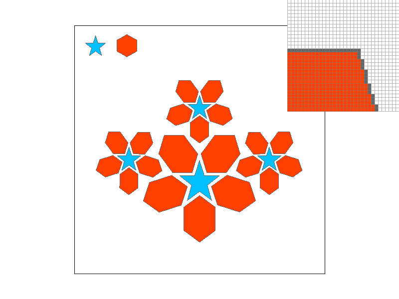
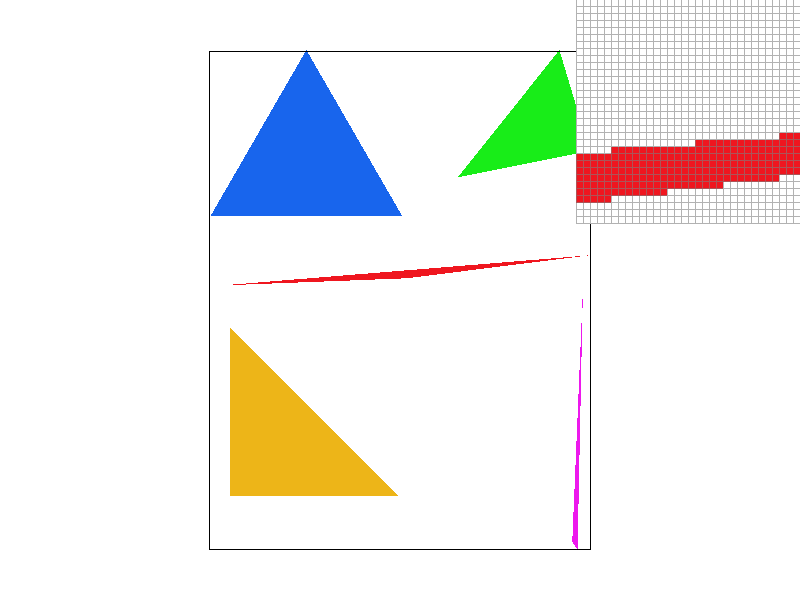
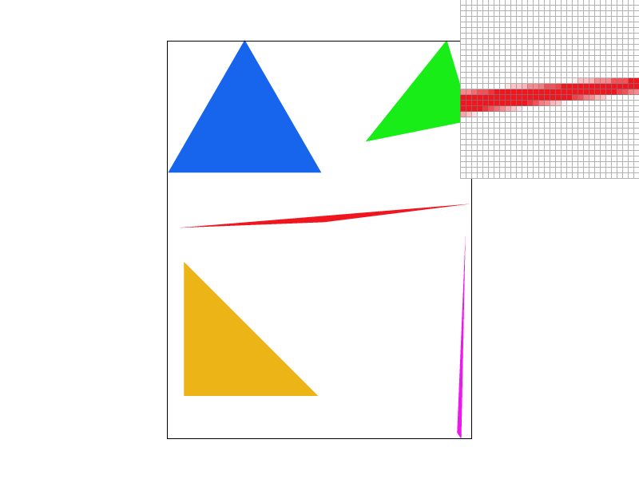
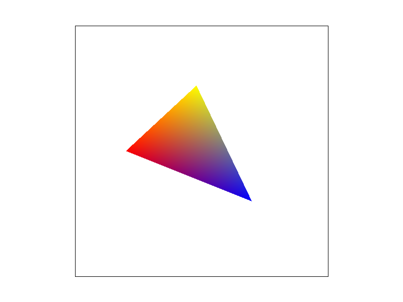
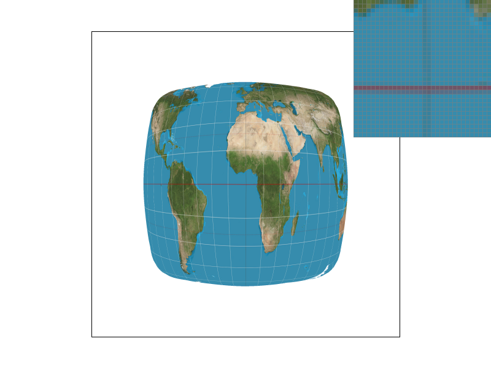

Overview
Give a high-level overview of what you implemented in this homework Think about what you've built as a whole. Share your thoughts on what interesting things you've learned from completing the homework.
Section I: Rasterization
Part 1: Rasterizing single-color triangles
I achieve the rasterization of a triangle by rasterizing its interior and edges separately. Initially, I arrange the given three points in counterclockwise order for ease of using the formula provided in the presentation slides, employing cross-product for this purpose. If the cross-product result is greater than zero, it indicates clockwise arrangement of the three points, requiring the exchange of two of them. Subsequently, I implement the is_inside_edge function according to the formula provided in the slides. If a point yields a function value d less than zero for all three edges, it lies inside the triangle, and I rasterize it using the rasterize_point function. I first determine the maximum and minimum x and y values among the three points, and then traverse the content within the rectangle to ensure only samples within the bounding box are evaluated.
|

|
Part 2: Antialiasing triangles
My supersampling algorithm differs from the implementation in the lecture notes. Instead of altering and then restoring the sample buffer, it simply resizes according to the sampling rate, with the final output correctly obtained through a resolve step.
First, triangles are processed by setting the step size to offset = 1.0 / (sqrt(sample_rate) * 2). Corresponding indices sx, sy are established for populating the sample buffer.
// Rasterize a triangle.
void RasterizerImp::rasterize_triangle(float x0, float y0,
float x1, float y1,
float x2, float y2,
Color color) {
// TODO: Task 1: Implement basic triangle rasterization here, no supersampling
float pt[2];
//find bound
int min_x = floor(min(min(x0, x1), x2));
int min_y = floor(min(min(y0, y1), y2));
int max_x = floor(max(max(x0, x1), x2));
int max_y = floor(max(max(y0, y1), y2));
float offset = 1.0 / (sqrt(sample_rate) * 2);
float min_pt[] = { min_x + offset,min_y + offset };
float max_pt[] = { max_x + 1.0,max_y + 1.0 };
if((x1 - x0) * (y2 - y0) - (x2 - x0) * (y1 - y0) < 0){
swap(x1, x2);
swap(y1, y2);
}
int sx;
int sy;
for(pt[0] = min_pt[0], sx = (int)(floor(pt[0]) * sqrt(sample_rate)); pt[0] <= max_pt[0]; pt[0]+=offset * 2, sx++){
for(pt[1] = min_pt[1], sy = (int)(floor(pt[1]) * sqrt(sample_rate)); pt[1] <= max_pt[1]; pt[1]+=offset * 2, sy++){
if(is_inside_edge(pt[0], pt[1], x0, y0, x1, y1)
&& is_inside_edge(pt[0], pt[1], x1, y1, x2, y2)
&& is_inside_edge(pt[0], pt[1], x2, y2, x0, y0)){
// rasterize_point(pt[0], pt[1], color);
// fill in the nearest pixel
if (sx < 0 || sx >= width * (int)(sqrt(sample_rate))) return;
if (sy < 0 || sy >= height * (int)(sqrt(sample_rate))) return;
sample_buffer[sy * width * (int)(sqrt(sample_rate)) + sx] = color;
}
}
}
}
Then, the elements in the sample buffer are processed through two nested loops, averaging every sqrt(rate) * sqrt(rate) elements to obtain the color, which is then filled into a frame buffer cell. This
void RasterizerImp::resolve_to_framebuffer() {
// TODO: Task 2: You will likely want to update this function for supersampling support
int super_width = width * (int)(sqrt(sample_rate));
int super_height = height * (int)(sqrt(sample_rate));
int len = sqrt(sample_rate);
int k;
int sx;
int sy;
for (int x = 0; x < width; ++x) {
for (int y = 0; y < height; ++y) {
//TODO: average color
sx = x * len;
sy = y * len;
Color col = Color::White;
if(sample_rate == 1) col = sample_buffer[y * width + x];
else{
for(int i = 0; i < len; ++i){
for(int j = 0; j < len; ++j){
if(i == 0 && j == 0) col = sample_buffer[sy * super_width + sx];
else col += sample_buffer[sy * super_width + sx + i * (super_width) + j];
}
}
for(k = 0; k < 3; ++k){
(&col.r)[k] = ((&col.r)[k]) / sample_rate;
}
}
for (k = 0; k < 3; ++k) {
this->rgb_framebuffer_target[3 * (y * width + x) + k] = (&col.r)[k] * 255;
}
}
}
By averaging with supersampling, pixel blocks that would not show color with single-pixel sampling may now display a faint color because part of them is selected by the supersampling, allowing for partial filling in the middle of the jagged edges. Below are images of triangle aliasing with sampling rates of 1, 4, and 16.
|

|
|

|
Part 3: Transforms
I made Cubeman dance.
Section II: Sampling
Part 4: Barycentric coordinates
Barycentric interpolation is calculated based on the coordinates of a point within the triangle and its weights relative to the three vertices of the triangle. As can be seen from the gradient-colored triangle illustration below, the closer to the vertex with a certain color, the more pronounced that color is. In the middle of the triangle, all three colors are relatively faint.
The gradient-colored triangle is drawn with reference to the test7 code, using RGBA value.

|

|
Part 5: "Pixel sampling" for texture mapping
Pixel sampling is the process of mapping texture pixels to screen pixels. For the sampling points or supersampling points on the screen pixels, calculate their barycentric interpolation coefficients, and use the coefficients to multiply the texture pixels' ux, uy to obtain the corresponding texture pixel points. Using the relative texture pixel points multiplied by the width and height of the mipmap can yield the correct texture pixels.
Nearest neighbor interpolation directly finds the closest pixel in the texture and uses its color. In contrast, bilinear interpolation uses the four pixels surrounding the pixel point and applies an interpolation method to weight their colors and obtain the final color.
The difference between the two methods is quite noticeable in test5, as the image contains uniformly distributed lines. With bilinear interpolation, the image lines are significantly clearer when the sampling rate is 1, but the difference is not obvious when the sampling rate is 16.
|
|
|
|
|

|
Part 6: "Level sampling" with mipmaps for texture mapping
Section III: Art Competition
If you are not participating in the optional art competition, don't worry about this section!